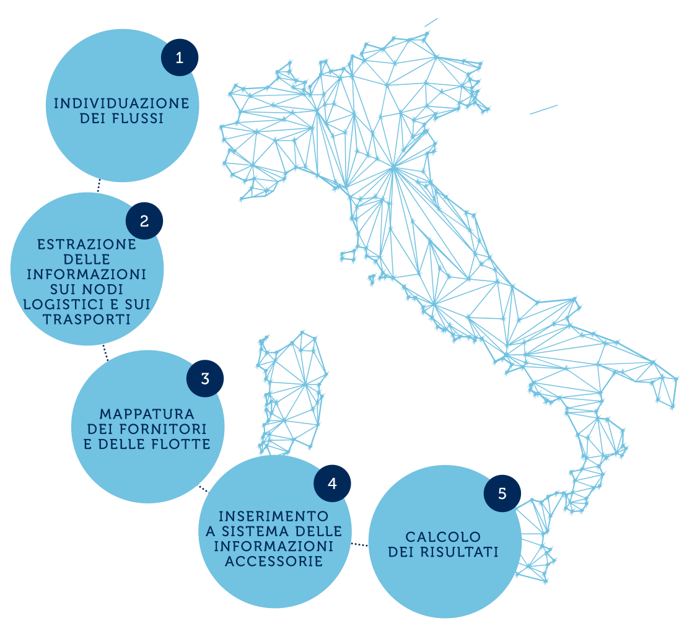
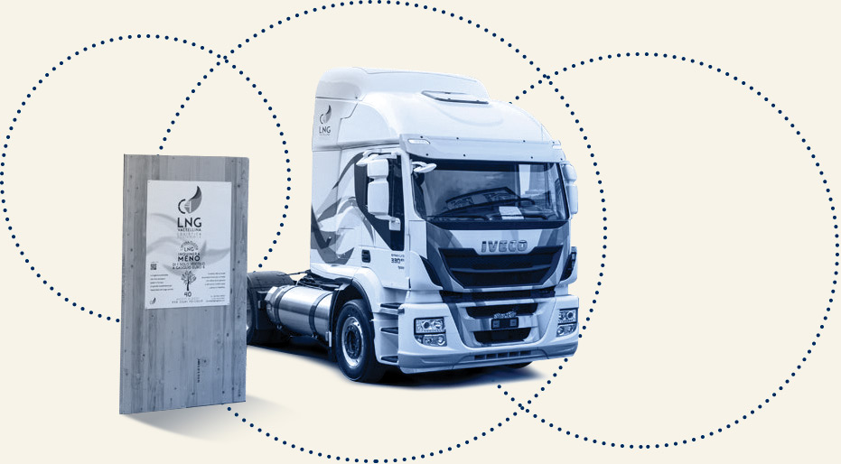
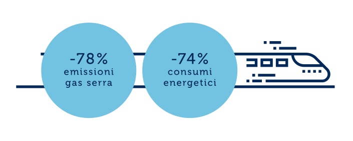
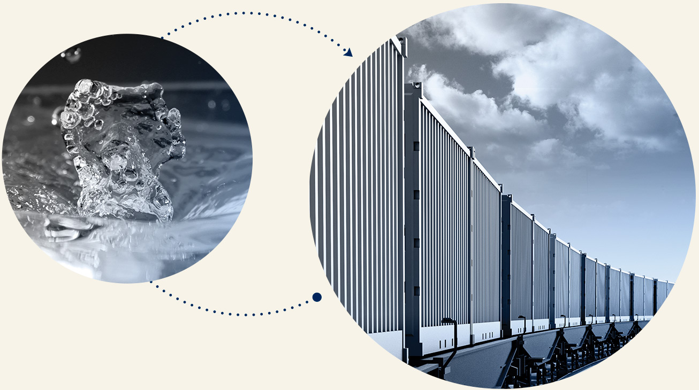
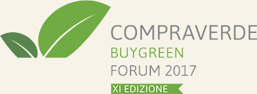

Nella logistica il Gruppo persegue una strategia sistemica che si concretizza in:
UN PERCORSO SEMPRE PIù VERDE
IL PROGETTO GREEN ROUTER
Nei primi mesi del 2018 è stata completata la fase pilota del progetto Green Router, con lo scopo di misurare le emissioni di CO₂ del canale logistico in uscita e, conseguentemente, ottimizzare i flussi e le modalità logistiche in ottica di riduzione dell’impatto ambientale. La fase pilota del progetto si è concentrata sul caso Levissima, analizzata in tutti i suoi trasporti nel 2017.
Il progetto si compone di 5 fasi:
I PARTNER DELLA LOGISTICA. A TUTTO LNG
LNG sta per Gas Naturale Liquefatto e rappresenta l’ultima frontiera di carburanti di origine fossile a ridotto impatto ambientale: se paragonato ad un veicolo a diesel, uno a LNG può consentire una riduzione delle emissioni di anidride carbonica fino al 15%.
Proprio per sfruttare al meglio le potenzialità di questo carburante, Levissima e Gruppo Maganetti, leader logistico della provincia di Sondrio, hanno creato il progetto LNG.
Nel giro di un anno e mezzo un progetto aziendale si è trasformato in un progetto territoriale: oggi una trentina di realtà valtellinesi sono state coinvolte in un’iniziativa che ha un budget per le infrastrutture a regime di 4 milioni di euro.
Un treno d’acqua per CAMST
L’iniziativa, sviluppata per trasportare su rotaia l’acqua minerale Nestlé Vera su una tratta di 140 km, generalmente coperta da gomma, permette di trasportare via treno l’equivalente di circa 500 autotreni l’anno con un risparmio pari a 66,5 tonnellate di CO2.
RISULTATI
 Vendor Rating. Gli acquisti sostenibili
Il Gruppo Sanpellegrino si è aggiudicato il premio “Vendor rating e acquisti sostenibili 2017”, assegnato nel corso dell’ultimo Forum Compraverde, promosso dalla Fondazione Ecosistemi.
È stata apprezzata la strategia di fornitura orientata alla sostenibilità, ovvero l’attenzione alla garanzia dei migliori standard ambientali, sociali ed etici su tutti gli acquisti relativi ai nostri prodotti, dalle materie prime agricole delle nostre bibite al PET e alla logistica sostenibile grazie agli innovativi progetti di trasporto LNG.
